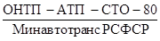
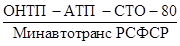
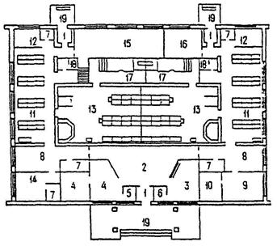
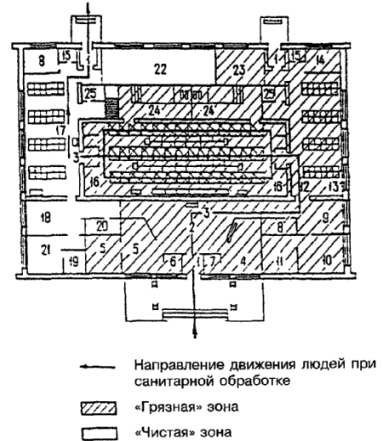
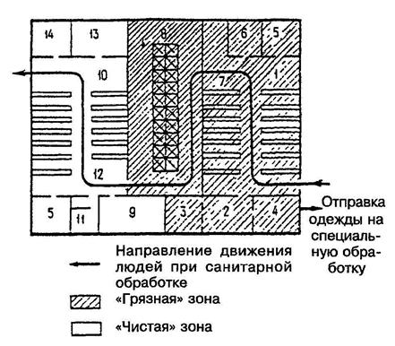
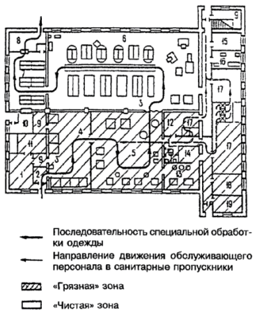
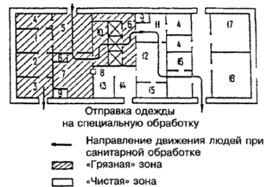
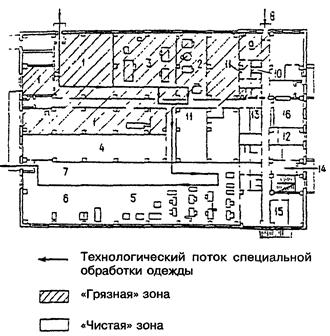
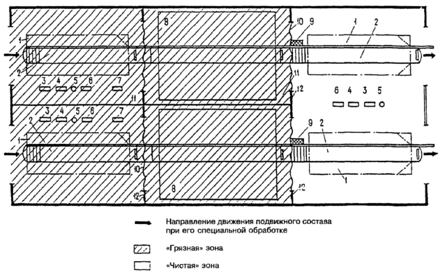
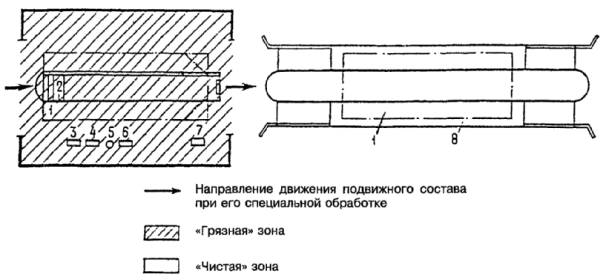

СТРОИТЕЛЬНЫЕ НОРМЫ И ПРАВИЛА
ПРИСПОСОБЛЕНИЕ
ОБЪЕКТОВ
КОММУНАЛЬНО-БЫТОВОГО
НАЗНАЧЕНИЯ
ДЛЯ САНИТАРНОЙ
ОБРАБОТКИ ЛЮДЕЙ,
СПЕЦИАЛЬНОЙ
ОБРАБОТКИ ОДЕЖДЫ
И ПОДВИЖНОГО СОСТАВА
АВТОТРАНСПОРТА
СНиП 2.01.57-85
ГОССТРОЙ РОССИИ
Москва 2002
|
Государственный
комитет СССР |
Строительные нормы и правила |
СНиП 2.01.57-85 |
|
Приспособление объектов коммунально-бытового назначения для санитарной обработки людей, специальной обработки одежды и подвижного состава автотранспорта |
Взамен |
Настоящие нормы с учетом требований, изложенных в обязательном приложении 1*, распространяются на проектирование приспособления вновь строящихся, реконструируемых и действующих объектов коммунально-бытового назначения независимо от их ведомственной подчиненности:
бань и душевых промышленных предприятий - для санитарной обработки людей в качестве санитарных обмывочных пунктов;
прачечных, фабрик химической чистки - для специальной обработки одежды, а также импрегнирования одежды защитными составами в качестве станций обеззараживания одежды и станций пропитки одежды;
прачечных самообслуживания, включая кооперированные предприятия стирки белья и химической чистки, - для импрегнирования одежды в качестве станций пропитки одежды;
помещений постов мойки и уборки подвижного состава автотранспорта (далее в тексте именуется «подвижной состав») в автотранспортных предприятиях, на базах централизованного технического обслуживания и станциях технического обслуживания - для специальной обработки подвижного состава в качестве станций обеззараживания.
_____________
* Обязательное приложение 1 рассылается министерствами и ведомствами (см. вкладыш).
1.1. При проектировании приспособления объектов коммунально-бытового назначения, предназначенных для санитарной обработки людей, специальной обработки и импрегнирования одежды и специальной обработки подвижного состава, подвергшихся загрязнению отравляющими веществами (ОВ), радиоактивными веществами (РВ) или бактериальными средствами (БС), следует предусматривать круглосуточную бесперебойную работу этих объектов и поточность обработки, не допуская пересечения загрязненных потоков с потоками, прошедшими санитарную или специальную обработку.
Примечания: 1. Объекты или помещения, приспосабливаемые для санитарной обработки людей, специальной обработки и импрегнирования одежды, а также специальной обработки подвижного состава, далее в тексте именуются «объекты или помещения».
2. К одежде, подлежащей специальной обработке, следует относить также нательное белье и фильтрующие средства защиты кожи человека.
1.2. Вход и выход (въезд и выезд) из объектов, как правило, следует располагать с разных сторон здания. Допускается размещать вход и выход (въезд и выезд) с одной стороны здания при условии, что расстояние между ними составляет не менее 20 м.
1.3. В объектах или помещениях следует выделять «грязную» и «чистую» зоны с целью отделения загрязненных потоков от потоков, прошедших санитарную или специальную обработку.
1.4. Санитарную обработку персонала, обслуживающего объекты, приспособленные для специальной обработки одежды и подвижного состава, а при необходимости - и лиц, доставивших на специальную обработку одежду или подвижной состав, следует производить в санитарных пропускниках, оборудованных на базе душевых помещений объектов.
При проектировании приспособления бань необходимо предусматривать в зависимости от наличия площади пост или пункт медицинского осмотра.
Помещение (участок) для уличной и домашней одежды лиц, доставивших на специальную обработку одежду или подвижной состав, следует оборудовать во вспомогательных помещениях, не приспосабливаемых для специальной обработки одежды и подвижного состава.
«Чистая» зона объектов должна иметь комнату отдыха обслуживающего персонала, площадь которой определяется из расчета 1 м2 на одного человека, но не менее 12 м2.
1.5. Полы основных помещений (цехов, участков) объектов должны иметь уклон 0,01 - 0,02 в сторону трапов и лотков.
Стены и потолки помещений следует окрашивать влагостойкими красками. Рекомендуется отделка стен глазурованной плиткой на всю высоту помещения. Деревянные и стальные конструкции следует окрашивать масляными красками или эмалями два раза. Окна следует закрывать и герметизировать.
|
Внесены |
Утверждены
постановлением |
Срок введения |
Все трещины, щели, места прохода инженерных коммуникаций в перегородках и стенах между «чистой» и «грязной» зонами, а также дверные притворы неиспользуемых выходов из здания следует герметизировать и перед окраской шпатлевать.
1.6. Проход между «чистой» и «грязной» зонами, как правило, следует оборудовать тамбурами, оснащенными двумя дверьми.
1.7. Объекты следует оборудовать приточно-вытяжной вентиляцией согласно требованиям строительных норм и правил по проектированию соответствующих объектов и СН 245-74В, при этом необходимо обеспечить направленное движение воздуха из «чистой» зоны «в грязную».
При проектировании вентиляции следует предусматривать перераспределение воздухоподачи между отдельными помещениями в соответствии с нормами воздухообмена помещений. Пересмотр проектов магистральных воздуховодов не допускается.
При необходимости допускается предусматривать повышение скоростей воздушного потока в воздуховодах, несмотря на появление в связи с этим шума повышенного уровня.
При недостаточной воздухоподаче в системе вентиляции следует предусматривать возможность увеличения производительности вентиляторов или при необходимости установку дополнительных вентиляторов.
Температура воздуха, подаваемого в помещения в холодное время года, должна быть не ниже 15 °С.
1.8. Система канализационных выпусков, лотков и колодцев на объектах должна быть доступной для периодической чистки.
Локальные очистные сооружения следует проектировать с учетом возможности их работы в режиме специальной обработки сточных вод в соответствии с требованиями ВСН ВК5-77, утвержденных Минжилкомхозом РСФСР.
Сточные воды при отсутствии на объектах локальных очистных сооружений следует подвергать специальной обработке на городских сооружениях биологической и физико-химической очистки сточных вод.
1.9. На территории объекта (или прилегающей к нему) следует оборудовать участок площадью 10 - 20 м2 для временного хранения загрязненных отходов и ветоши до их вывоза в места, определяемые по согласованию с местной санитарно-эпидемиологической станцией.
Участок складирования, имеющий твердое покрытие и водоотвод в дождеприемный колодец, а при отсутствии дождевой канализации - в испарительный колодец, следует располагать в «грязной» зоне.
1.10. На территории объекта или вблизи него следует предусматривать выделение площадок для частичной санитарной обработки прибывающих людей, которые следует располагать с учетом направления ветров в данной местности.
«Грязная» зона площадки должна находиться с подветренной стороны по отношению к «чистой» зоне и к объекту.
На площадке частичной санитарной обработки следует предусматривать твердое покрытие и организованный водоотвод. Сброс сточных вод следует производить в дождеприемный колодец, а при отсутствии дождевой канализации - в испарительный колодец.
При проектировании приспособления объекта только для импрегнирования одежды площадку для частичной санитарной обработки предусматривать не следует.
1.11. Проектно-сметную документацию на приспособление объектов коммунально-бытового назначения следует разрабатывать в соответствии с «Инструкцией о составе, порядке разработки, согласования и утверждения проектно-сметной документации на строительство предприятий, зданий и сооружений» и с учетом требований к проектной документации, изложенных в обязательном приложении 1.
2.1. При проектировании приспособления бань для санитарной обработки людей следует предусматривать на их территориях площадки для частичной специальной обработки протиранием дегазирующими, дезинфицирующими и дезактивирующими растворами изолирующих средств индивидуальной защиты (защитных костюмов, резиновых сапог, защитных перчаток, противогазов) и обуви. Площадка должна быть оборудована вешалками для выколачивания одежды, загрязненной РВ.
Указанные средства индивидуальной защиты (за исключением противогазов) и обувь после специальной обработки следует упаковывать в пронумерованные пластиковые пакеты и на транспортных тележках перевозить в одевальную, где содержимое пакетов возвращают их владельцам, прошедшим полную санитарную обработку.
В сырую или холодную погоду специальную обработку средств индивидуальной защиты и обуви необходимо производить, как правило, в вестибюле бани.
В проекте приспособления бань в качестве основных помещений следует предусматривать использование помещений мужского и женского отделений (через которые необходимо организовать поточное движение людей при санитарной обработке): вестибюль, ожидальную раздевальную, мыльное и душевое отделения, одевальную (раздевальную смежного отделения), а также выход на улицу.
Остальные помещения бань: ванные, отдельные номера, оздоровительно-профилактические отделения, служебные и подсобные помещения - следует использовать в качестве вспомогательных.
Помещения бани для санитарной обработки людей следует использовать согласно табл. 1.
2.2. В состав «грязной» зоны необходимо, включать следующие основные помещения: вестибюль, помещения для приемки верхней (уличной) одежды, сортировки и упаковки в тарные мешки загрязненного имущества, ожидальную, раздевальную, душевую и смежные с ними вспомогательные помещения.
В «грязной» зоне следует предусматривать помещение (участок) для парикмахерской.
Остальные помещения следует относить к «чистой» зоне.
Назначение помещений |
|
|
для работы в обычном режиме |
для санитарной обработки людей |
|
Вестибюли с гардеробом |
Вестибюли, помещения приемки верхней одежды, загрязненной OB, PB и БС (далее в тексте именуется «загрязненная одежда») |
|
Ожидальная |
Ожидальная, пункт медицинского осмотра и пост дозиметрического контроля |
|
Раздевальная |
Раздевальная, места сбора загрязненной одежды, дополнительной специальной обработки противогазов, упаковки их в пронумерованные пластиковые пакеты и укладка в транспортную тележку |
|
Уборная |
Уборная |
|
Мыльное отделение |
Душевая |
|
Душевые кабины |
» |
|
Раздевальная (смежного отделения) |
Одевальная, посты медицинского осмотра и дозиметрического контроля |
|
Остальные помещения |
Помещение (участок) для сортировки и упаковки загрязненной одежды и средств индивидуальной защиты в тарные мешки для отправки на станцию обеззараживания одежды; помещение (участок) для хранения запаса мыла и мочалок; помещение для хранения обеззараживающих средств; комната отдыха обслуживающего персонала; гардероб персонала (для хранения обработанной одежды и средств индивидуальной защиты); помещение для хранения обменного фонда одежды, обуви и средств индивидуальной защиты |
|
Примечание. В теплую сухую погоду при функционировании площадки частичной санитарной обработки постдозиметрического входного контроля из ожидальной переносится во вход в баню. |
|
2.3. При проектировании приспособления бани движение людей следует предусматривать, как правило, в один поток, при этом женщины и мужчины обслуживаются попеременно.
Примерная схема работы бани в обычном режиме и ее приспособление для санитарной обработки людей приведены в рекомендуемом приложении 2.
2.4. В раздевальной должно быть предусмотрено место (участок) для дополнительной специальной обработки надетых противогазов протиранием дегазирующими или дезинфицирующими растворами.
Рядом с раздевальной следует предусматривать помещения или участки (места) для сортировки, упаковки загрязненной одежды и отправки ее на станцию обеззараживания одежды. Загрязненная одежда обезличивается.
Допускается предусматривать дезинфекционные камеры для обеззараживания одежды от БС.
В «грязной» зоне между ожидальной и раздевальной следует предусматривать уборную, используемую только при заражении БС.
2.5. Смежно расположенные мыльные и душевые мужского и женского отделений бани необходимо приспосабливать под единое душевое помещение для санитарной обработки людей. С этой целью в перегородке между отделениями следует предусматривать запасные двери.
Допускается предусматривать между мыльными и душевыми мужского и женского отделений бани помещения другого назначения при условии обеспечения прохода через эти помещения из одной мыльной или душевой в другую.
2.6. Санитарную обработку людей необходимо предусматривать в главном проходе и проходах между скамьями мыльных отделений, приспособленных под душевые, а также в душевых кабинах.
При входе в мыльное отделение, приспособленное под душевую, следует предусматривать участок для снятия противогазов, упаковки их в пронумерованные пластиковые пакеты и укладки на транспортную тележку для перевозки в одевальную, где противогазы возвращают их владельцам.
Допускается между раздевальной и душевой устраивать тамбуры для специальной обработки (протиранием) шлемов-масок противогазов, снятия их, упаковки в пронумерованные пластиковые пакеты и укладки на транспортную тележку перед входом в душевую.
2.7. Раздевальную одного из отделений бани необходимо приспосабливать под одевальную.
При ожидальной и одевальной следует предусматривать посты медицинские и дозиметрического контроля.
Допускается отделять помещения медицинского поста и поста дозиметрического контроля от других помещений ширмами или легкими перегородками.
Площадь медицинского поста должна быть не менее 9 м2.
2.8. Число мест в раздевальной и одевальной (в отдельности) должно соответствовать числу людей, одновременно проходящих санитарную обработку, которое должно быть равно удвоенному числу душевых сеток.
Площадь помещений раздевальной (одевальной) следует принимать из расчета 4 м2 на одну душевую сетку, предусматривая при этом по два места для раздевания (одевания).
Расчет пропускной способности бани при работе в режиме санитарной обработки людей приведен в обязательном приложении 1.
2.9. Помещение (участок) для сбора, сортировки и упаковки загрязненной одежды следует располагать в «грязной» зоне. Это помещение должно иметь связь с раздевальной и гардеробом вестибюля.
При размещении этого помещения (участка) на первом этаже допускается предусматривать погрузку загрязненного имущества (при отправке его на специальную обработку) через окно.
2.10. Помещение для хранения обменного фонда одежды, обуви и средств индивидуальной защиты следует предусматривать в одном из помещений бани, расположенном смежно с одевальной или имеющем с ним связь, в «чистой» зоне. Это помещение должно быть оборудовано стеллажами для размещения рассортированных по размерам одежды, обуви и средств индивидуальной защиты.
Помещения для хранения обменного фонда следует проектировать из расчета замены нательного белья, одежды и фильтрующих средств защиты кожи для всех лиц, прошедших санитарную обработку, а обуви, изолирующих средств защиты кожи и противогазов - для 10 - 20 % лиц, прошедших санитарную обработку.
Площадь помещений (участков) для сортировки и упаковки загрязненной одежды, а также для хранения обменного фонда следует принимать из расчета 0,06 м2 на 1 кг одежды, обуви и средств индивидуальной защиты, но не менее 6 м2.
Площадь помещений (участков) для сбора загрязненной и выдачи чистой одежды следует принимать из расчета 0,02 м2 на 1 кг одежды, но не менее 6 м2.
Площадь для хранения мыла и мочалок следует принимать из расчета 0,16 м2 на одну душевую сетку, но не менее 3 м2.
2.11. Для переоборудования мыльных помещений в душевые под потолком главного прохода и под потолком между скамьями необходимо укрепить трубопроводы с переходными фитингами для подсоединения к ним душевых сеток.
Душевые сетки крепят к трубопроводам через переходные фитинги на расстоянии 1,1 м одна от другой. Душевые сетки следует располагать на высоте 2,2 м от пола.
2.12. Трубопроводы, к которым присоединяют душевые сетки, должны питаться от одного общего смесителя горячей и холодной воды, устанавливаемого со стороны «чистой» зоны. Температура горячей воды должна быть не менее 38 - 40 °С при одновременной работе всех душевых сеток.
2.13. Трубопроводы следует проектировать из расчета пропуска по ним воды 5 - 7 л/мин на каждую душевую сетку.
При использовании тупиковых кабин расход воды следует увеличивать на 2 л/мин на каждую сетку.
2.14. Запасные (уравнительные) баки холодной и горячей воды следует предусматривать в соответствии со СНиП II-80-75.
2.15. Вентиляция в помещениях бани, приспосабливаемой для санитарной обработки людей, должна удовлетворять следующим требованиям:
вытяжка предусматриваться из душевой, раздевальной и других помещений «грязной» зоны;
свежий воздух подаваться в одевальную и другие помещения «чистой» зоны;
кратность воздухообмена в 1 ч должна быть не менее: 10 - в помещении (на участке) для хранения загрязненной одежды, 5 - в остальных помещениях «грязной» зоны.
Количество подаваемого воздуха в помещения бани должно быть не менее количества, предусматриваемого СНиП II-80-75.
2.16. Ширина дверных проемов основных помещений санитарного обмывочного пункта, а также проходов между душевыми кабинами должна быть не менее 0,9 м и предусматривать проезд транспортных тележек, идентичных применяемым в прачечных для транспортирования белья. Проезд транспортных тележек следует предусматривать из помещения приемки верхней одежды в одевальную.
3.1. При проектировании приспособления санитарно-бытовых помещений промышленных предприятий для санитарной обработки людей следует предусматривать использование в качестве основных помещений гардероба и душевых. Через эти помещения следует организовать поточное движение людей в последовательности: ожидальная - раздевальная - участок для специальной обработки противогазов - душевая - одевальная. Остальные санитарно-бытовые помещения (умывальные, курительные, кладовые и т.д.) следует использовать в качестве вспомогательных помещений, необходимых для санитарной обработки людей.
Санитарно-бытовые и другие близлежащие вспомогательные помещения промышленных предприятий для санитарной обработки людей следует использовать согласно табл. 2.
|
Назначение помещений |
|
|
для работы в обычном режиме |
для санитарной обработки людей |
|
Гардероб специальной одежды |
Участок для сбора загрязненной одежды; участок для сортировки и упаковки загрязненной одежды в тарные мешки; участок для специальной обработки противогазов; раздевальная |
|
Кладовая чистой спецодежды |
Медицинский пункт |
|
Кладовая грязной спецодежды |
Помещение для хранения и выдачи мыла и мочалок |
|
Преддушевая, душевая |
Душевая |
|
Уборная |
Уборная |
|
Гардероб домашней одежды |
Пост дозиметрического контроля; одевальная; медицинский пункт; место хранения и выдачи обменного фонда одежды, обуви и средств индивидуальной защиты |
|
Места для дежурного персонала, глажения и чистки одежды |
Комната отдыха обслуживающего персонала; гардероб обслуживающего персонала |
3.2. При проектировании приспособления санитарно-бытовых помещений для санитарной обработки людей следует предусматривать поточное движение людей, при этом женщины и мужчины должны проходить санитарную обработку попеременно или двумя параллельными потоками.
Пропускную способность санитарно-бытовых помещений следует принимать в соответствии с обязательными приложением 1.
Для обеспечения требуемого режима движения и сокращения времени, затрачиваемого на санитарную обработку, необходимо основные санитарно-бытовые помещения: гардероб, душевые, преддушевые, кладовые - предусматривать смежными, а вспомогательные помещения, предназначенные для хранения моющих средств и обменного фонда одежды и обуви, для сбора, сортировки и упаковки загрязненного имущества и для обслуживающего персонала, - по возможности смежными с основными помещениями.
3.3. В состав «грязной» зоны необходимо включать участок для сбора, сортировки и упаковки загрязненной одежды, раздевальную и душевую.
Приспособление помещений для санитарной обработки людей и их планировочные решения следует выполнять в соответствии с требованиями пп. 2.2, 2.4 - 2.7, 2.9 и 2.10.
3.4. Примерная схема приспособления санитарно-бытовых помещений промышленных предприятий для санитарной обработки людей приведена в рекомендуемом приложении 2.
3.5. Число мест в раздевальной и одевальной, а также площади основных и вспомогательных помещений определяются в соответствии с требованиями п. 2.8.
Площадь помещения раздевальной (одевальной) следует принимать из расчета 4 м2 на одну душевую сетку, предусматривая при этом по два места для раздевания (одевания).
Площади медицинского поста, помещений (участков) для сбора, сортировки и упаковки загрязненной одежды, хранения и выдачи обменного фонда следует принимать в соответствии с требованиями пп. 2.7 и 2.10.
3.6. Полы в раздевальных, местах санитарной обработки людей, в помещениях для сбора, сортировки и упаковки загрязненной одежды должны иметь трапы. Покрытие полов должно допускать их чистку и влажную уборку с применением дезинфицирующих и дегазирующих средств.
Облицовку стен и перегородок, а также устройство полов остальных помещений следует предусматривать в соответствии с требованиями СНиП II-92-76 и п. 1.5 настоящих норм.
3.7. Вентиляцию и отопление в приспосабливаемых помещениях следует проектировать в соответствии с требованиями СНиП II-92-76 и п. 2.15 настоящих норм.
3.8. Требования к трубопроводам, температуре воды и ее расходу следует принимать в соответствии с пп. 2.12 и 2.13.
3.9. Помещения или участки для сбора, сортировки и упаковки загрязненной одежды следует предусматривать в соответствии с требованиями п. 2.4.
3.10. Ширину дверных проемов следует предусматривать в соответствии с требованиями п. 2.16.
4.1. Помещения прачечной, используемые для специальной обработки одежды, приведены в табл. 3.
|
Назначение помещений |
|
|
для работы в обычном режиме |
для специальной обработки одежды |
|
Цех приемки и сортировки грязного белья |
Цех приемки и сортировки загрязненной одежды; посты дозиметрического и химического контроля |
|
Склад материального обеспечения |
Склад загрязненной одежды |
|
Стиральный цех |
Цех специальной обработки; участок приготовления растворов для специальной обработки одежды |
|
Кладовая моющих средств |
Склад моющих средств и препаратов для специальной обработки |
|
Сушильно-гладильный цех |
Цех окончательного обезвоживания и отделки одежды |
|
Цех разборки, починки и упаковки белья: |
Цех разборки, починки и упаковки специально обработанной одежды: |
|
помещение для разборки белья |
участок подборки специально обработанной одежды |
|
помещение для хранения белья |
склад одежды, прошедшей специальную обработку |
|
Вспомогательные и бытовые помещения прачечных |
Комната отдыха обслуживающего персонала; кладовая обменного фонда одежды, обуви и средств индивидуальной защиты; санитарный пропускник |
При проектировании приспособления прачечных, включая прачечные самообслуживания и кооперированные предприятия, для импрегнирования одежды следует предусматривать помещение для лаборатории площадью не менее 20 м2, оснащенное системой вентиляции, обеспечивающей работу вытяжного шкафа, а также кратность воздухообмена в помещении не менее 5 в 1 ч. К помещению лаборатории должна быть подведена горячая и холодная вода, а также электросеть, обеспечивающая работу сушильного шкафа и сушильного барабана загрузочной массой 5 кг белья.
4.2. В состав «грязной» зоны следует включать цех приемки и сортировки загрязненной одежды, склад загрязненной одежды, цех специальной обработки, а также помещения для санитарной обработки обслуживающего персонала. Остальные помещения необходимо относить к «чистой» зоне.
Производственную мощность прачечных при специальной обработке одежды следует принимать в соответствии с обязательным приложением 1.
4.3. Приспосабливаемые помещения необходимо размещать в соответствии с принципом поточности обработки: загрязненная одежда от участка сортировки подается на склад (планировочное решение и оборудование которого должны предусматривать возможность раздельного хранения загрязненной одежды по видам загрязнения), затем поступает на специальную обработку и далее в «чистую» зону на глажение, починку, подборку, упаковку и отправку.
4.4. При одноэтажной планировке производственных цехов «грязная» и «чистая» зоны должны находиться с разных сторон здания, а внутри здания разделяться перегородкой, в которой следует предусматривать тамбур для проезда внутрицехового транспорта. При многоэтажной планировке цехов «грязную» зону следует располагать на нижних, а «чистую» - на верхних этажах.
4.5. Немеханизированные склады для хранения загрязненной и обработанной одежды следует оснащать металлическими стеллажами. На складе обработанного белья допускается применять деревянные стеллажи, окрашенные масляной краской два раза.
4.6. Цех приемки и сортировки, а также склад загрязненной одежды должны быть ограждены от остального помещения стирального цеха сплошными перегородками. В перегородках следует предусматривать ворота (двери) для проезда внутрицехового транспорта.
4.7. Для специальной обработки и импрегнирования одежды следует использовать только циклические стирально-отжимные и стиральные машины.
Стиральные тоннельные и карусельные установки разрешается использовать только для дополнительной гигиенической стирки после специальной обработки одежды.
4.8. Сушильно-растрясочные машины должны быть вмонтированы в перегородку между стиральным и гладильным цехами так, чтобы отверстие загрузки машины находилось в «грязной», а отверстие выгрузки - в «чистой» зоне.
При проектировании приспособления прачечных для импрегнирования одежды следует увеличивать мощность сушильного (сушильно-растрясочного) оборудования до 30 - 40 % мощности установленного в прачечной циклического стирального оборудования (стиральных и стирально-отжимных машин).
4.9. При проектировании приспособления новых и реконструируемых прачечных для специальной обработки одежды, как правило, следует предусматривать подачу сухого перегретого пара давлением, МПа (кгс/см2):
к отечественным стирально-отжимным и стиральным машинам - 0,3 - 0,5 (3 - 5);
к импортным стирально-отжимным машинам - 0,5 - 0,8 (5 - 8);
к гладильному оборудованию - 0,6 - 1,2 (6 - 12), а также подачу сжатого воздуха давлением 0,5 - 0,7 (5 - 7).
4.10. Между двумя смежными машинами циклического действия, выполняющими операции стирки и (или) отжима, трубопроводы горячей и холодной воды необходимо оборудовать смесителями со штуцерами под шланг для специальной обработки крышек загрузочных люков и прилегающих к ним участков корпуса машины перед выгрузкой из нее одежды.
Примерная схема приспособления прачечной для работы в режиме специальной обработки одежды приведена в рекомендуемом приложении 2.
4.11. Вспомогательные помещения, в том числе и душевые прачечной, необходимо приспосабливать под санитарный пропускник для санитарной обработки персонала, обслуживающего объект, а при необходимости - и лиц, обеспечивших доставку в прачечную загрязненной одежды.
Число потоков при санитарной обработке людей и число душевых сеток в каждом потоке необходимо определять из расчета проведения санитарной обработки наиболее многочисленной смены не более чем за 2 ч с учетом того, что работающие в «грязной» зоне в этот же срок должны провести самостоятельно перед санитарной обработкой (на площадке частичной санитарной обработки протиранием) специальную обработку принадлежащих им изолирующих средств защиты кожи и противогазов.
Требования к помещениям для санитарной обработки персонала, инженерным сетям и ширине дверных проемов должны соответствовать требованиям пп. 2.4 - 2.8, 2.10, 2.12, 2.13, 2.15, 2.16, 3.3 и 3.8.
4.12. В составе санитарного пропускника должны быть предусмотрены помещения, указанные в табл. 4.
|
Назначение помещений |
|
|
для работы в обычном режиме |
для санитарной обработки людей |
|
Гардероб и раздевальная |
Пост дозиметрического контроля; участки сбора, сортировки и упаковки загрязненной одежды; кладовая загрязненной одежды; раздевальная |
|
Преддушевая |
Медицинский пост; место специальной обработки и снятия противогазов, их упаковки и укладки в транспортную тележку; место выдачи мыла и мочалок |
|
Душевая |
Помещение для полной санитарной обработки людей |
|
Ожидальная |
Пост дозиметрического контроля; медицинский пост |
|
Одевальная |
Одевальная; гардероб уличной и домашней одежды, средств индивидуальной защиты обслуживающего персонала; место выдачи чистой одежды; места хранения обменного фонда одежды, противогазов, изолирующих средств защиты кожи, мыла и мочалок; комната отдыха обслуживающего персонала |
|
Примечания: 1. Обменный фонд средств индивидуальной защиты необходимо предусматривать на случай повреждения средств защиты, находящихся в пользовании персонала и лиц, сопровождающих прибывший на объект подвижной состав. 2. Гардероб уличной, домашней и рабочей одежды и средств индивидуальной защиты следует предусматривать для персонала, обслуживающего объект. |
|
4.13. Примерная схема санитарного пропускника на один поток и расположение основных помещений приведены в рекомендуемом приложении 2.
4.14. Вспомогательные помещения санитарного пропускника целесообразно располагать смежно с соответствующими основными помещениями. Изолированные вспомогательные помещения следует располагать в той же («грязной» или «чистой») зоне, что и соответствующие основные помещения.
4.15. В гардеробе санитарных пропускников следует предусматривать хранение уличной одежды открытым способом, домашней и рабочей одежды, белья, обуви, а также средств индивидуальной защиты в закрытых одинарных шкафчиках.
Размеры вспомогательных помещений должны соответствовать указанным в разд. 3.
4.16. Систему водоснабжения санитарного пропускника следует проектировать в соответствии с требованиями пп. 2.12 и 2.13.
4.17. При приспособлении новых и реконструкции действующих прачечных умывальники и душевые следует предусматривать в помещениях, смежных с уборными и гардеробом, из расчета: 1 умывальник на 25 чел.; 1 душевая сетка на 6 чел., но не менее 2 сеток.
Число уборных следует предусматривать в соответствии с требованиями СНиП II-92-76.
4.18. Бесперебойная подача воды при работе прачечной (производительностью при гигиенической обработке белья 3 т в смену и более) в режиме специальной обработки одежды должна обеспечиваться с помощью баков для хранения запаса воды. Проектировать запасные баки следует в соответствии с требованиями СНиП II-80-75.
4.19. Систему приточно-вытяжной вентиляции прачечных следует предусматривать в соответствии с требованиями пп. 1.7 и 2.15.
5.1. Фабрики химической чистки следует приспосабливать для специальной обработки и импрегнирования одежды.
При проектировании приспособления фабрик химической чистки необходимо предусматривать помещения (цехи) под следующие технологические потоки:
специальную обработку или импрегнирование одежды в водной среде (стиркой);
дегазацию одежды или снятие с импрегнированной одежды защитного состава в среде органических растворителей (химической чисткой).
При наличии на фабрике красильного отделения его оборудование следует включать в поток дегазации или дезинфекции одежды бучением.
Следует также предусматривать возможность специальной обработки в водной среде (стиркой или бучением).
Помещения фабрик химической чистки при специальной обработке одежды следует принимать согласно табл. 5.
|
Назначение помещений |
|
|
для работы в обычном режиме |
для специальной обработки одежды |
|
Отделение первичной сортировки одежды; отделение обработки ковров; отделение обработки пухо-перовых изделий |
Отделение сортировки одежды, подлежащей специальной обработке |
|
Отделение обработки одежды в водных растворах |
Отделение специальной обработки или импрегнирования одежды в водной среде (стиркой) |
|
Отделение химической чистки |
Отделение дегазации одежды или снятия с нее защитного состава в среде органических растворителей химической чисткой |
|
Материальный склад; кладовая основного производства |
Материальный склад моющих средств и органических растворителей для специальной обработки одежды |
|
Отделение влажно-тепловой обработки |
Отделение окончательного обезвоживания одежды |
|
Участок ремонта одежды |
Участок ремонта одежды |
|
Экспедиция |
Участок подборки и упаковки одежды, прошедшей специальную обработку |
|
Гардероб, бытовые помещения |
Санитарный пропускник |
|
Красильное отделение (при наличии) |
Отделение дегазации и дезинфекции бучением |
5.2. Примерная схема приспособления фабрики химической чистки для специальной обработки одежды приведена в рекомендуемом приложении 2.
5.3. В состав «грязной» зоны необходимо включать следующие отделения: сортировки одежды; специальной обработки одежды бучением или стиркой; дегазации одежды химической чисткой. К «чистой» зоне следует относить отделение влажно-тепловой обработки, участок ремонта одежды, экспедицию.
5.4. Размещение остальных помещений фабрики химической чистки следует предусматривать с учетом требований пп. 4.3 - 4.5.
Производственную мощность фабрики химической чистки в режиме специальной обработки одежды следует определять согласно обязательному приложению 1.
5.5. Требования к планировке, вентиляции и водоснабжению фабрики (в том числе санитарного пропускника), а также к составу и площадям ее основных и вспомогательных помещений аналогичны изложенным в разд. 2 и 4.
6.1. При проектировании приспособления новых или реконструкции действующих автотранспортных предприятий, баз централизованного технического обслуживания автомобилей, станций технического обслуживания автомобилей посты мойки и уборки автомобилей следует предусматривать проездными.
6.2. Специальную обработку подвижного состава следует производить на поточных линиях и проездных постах помещений мойки и уборки автомобилей. На действующих предприятиях тупиковые посты мойки и уборки автомобилей не следует приспосабливать для специальной обработки подвижного состава. При проектировании специальной обработки подвижного состава необходимо учитывать последовательность операций:
контроль загрязненности подвижного состава (при его загрязнении РВ);
чистка и мойка наружных и внутренних поверхностей подвижного состава (при его загрязнении РВ);
нанесение на поверхность подвижного состава обезвреживающих веществ (при дегазации и дезинфекции);
выдержка (при дезинфекции) нанесенных веществ на поверхности подвижного состава;
смывание (снятие) обеззараживающих веществ;
повторный контроль степени загрязненности РВ подвижного состава и в случае необходимости повторение дезактивации;
смазка поверхностей деталей и инструмента, изготовленных из легкокорродирующих материалов.
6.3. При специальной обработке подвижного состава следует принимать не менее двух последовательно расположенных рабочих постов.
Рабочий пост «чистой» зоны, предназначенный для повторного контроля загрязненности и
для смазки, допускается располагать отдельно от «грязной» зоны в смежном помещении или вне здания - на территории предприятия.
Рабочие посты «грязной» и «чистой» зон, расположенные в одном помещении, следует отделять перегородками с проемами для проезда автомобилей. Проемы должны быть оснащены водонепроницаемыми шторами.
6.4. В одном помещении допускается размещать два и более параллельно расположенных потоков для специальной обработки подвижного состава, при этом посты «грязных» зон параллельных потоков должны быть изолированы один от другого перегородками или экранами высотой не менее 2,4 м.
Расстояния между боковыми сторонами подвижного состава и экранами должны быть не менее: легковых автомобилей - 1,2 м; грузовых автомобилей и автобусов - 1,5 м.
Расстояния
между торцевыми сторонами подвижного состава, перегородками, шторами или
наружными воротами следует принимать в соответствии с нормами 
6.5. На постах специальной обработки подвижного состава в «грязной» зоне следует предусматривать установку рабочих столов с металлическим или пластмассовым покрытием, а также металлических емкостей с обезвреживающими растворами для специальной обработки узлов, деталей и инструмента, снимаемых с автомобилей.
В «чистой» зоне следует предусматривать установку рабочих столов для повторного контроля и смазки снятых узлов, деталей и инструмента.
6.6. К моечному оборудованию и рабочим столам, расположенным в «грязной» и «чистой» зонах, следует предусматривать подвод через смеситель холодной и горячей воды, а также сжатого воздуха.
Температура воды для мойки подвижного состава с использованием механизированных установок не нормируется. При ручной шланговой мойке температура воды должна быть 20 - 40 °С.
6.7: Рабочие посты «грязной» и «чистой» зон для работ в нижней части подвижного состава должны быть оборудованы осмотровыми канавами, эстакадами или подъемниками. Габариты рабочей зоны осмотровых канав следует принимать в соответствии с табл. 6.
|
Тип подвижного состава |
Габариты рабочей зоны осмотровых канав, м |
||
|
длина |
ширина |
глубина |
|
|
Легковые автомобили |
Не менее наибольшей длины автомобиля |
0,9-1,1 |
1,1-1,5 |
|
Грузовые автомобили и авто-поезда |
Не менее наибольшей длины автомобиля или автопоезда |
1,0-1,2 |
1,1-1,3 |
|
Автобусы |
Не менее наибольшей длины автобуса |
1,2-1,3 1,4-1,6 |
1,1-1,3 |
Ступени в осмотровой канаве следует предусматривать в торцевой части со стороны въездов автомобилей на рабочие посты без устройства тоннелей (переходов).
6.8. Пропускная способность участка специальной обработки подвижного состава приведена в обязательном приложении 1.
Примерные схемы размещения и оборудования рабочих постов в помещении на две параллельные поточные линии и на один проездной пост приведены в рекомендуемом приложении 2.
6.9. В одном здании с помещением для специальной обработки подвижного состава необходимо предусматривать раздельные помещения для хранения средств специальной обработки и материалов. Площадь помещения следует принимать в зависимости от пропускной способности участка обеззараживания состава, но не менее 8 м2. Вход в помещение следует предусматривать из «чистой» зоны. Помещение должно быть оборудовано стеллажами.
6.10. Помещение для обслуживающего персонала и санитарный пропускник, как правило, следует располагать в одном здании с постами специальной обработки подвижного состава.
Помещение для обслуживающего персонала должно иметь вход со стороны «чистой» зоны.
Для санитарных пропускников допускается приспосабливать санитарно-бытовые помещения (с двумя душевыми сетками и более), находящиеся в других корпусах предприятия.
6.11. Требования к санитарному пропускнику для обслуживания персонала, водителей подвижного состава и сопровождающих лиц, к составу и размерам его помещений аналогичны требованиям, изложенным в разд. 3.
6.12.
Отделка стен и перегородок, а также устройство полов помещений специальной
обработки подвижного состава должны соответствовать требованиям норм
технологического проектирования 
Полы помещений специальной обработки подвижного состава должны иметь уклон 0,02 в сторону осмотровых канав, полы которых должны иметь уклон в сторону выпуска сточных вод.
6.13. В помещениях специальной обработки подвижного состава, помещениях для обслуживающего персонала и на складе загрязненной одежды следует предусматривать поливочные краны для мытья полов.
6.14. Сточные воды из помещений, приспосабливаемых для специальной обработки подвижного состава, должны поступать на очистные сооружения оборотного водоснабжения. Используемые в обычное время при санитарной обработке транспорта очистные сооружения должны быть переведены на прямоточную схему без изменений схемы очистки.
Время пребывания сточных вод в очистных сооружениях должно быть не менее 30 мин. Сточные воды после очистки должны быть сброшены в бытовую или дождевую канализацию.
Осадок или масла из очистных сооружений следует вывозить в места, согласованные с местной санитарно-эпидемиологической станцией.
6.15. Приточно-вытяжная вентиляция должна обеспечивать в «грязной» зоне производственных помещений и санитарного пропускника часовую кратность обмена воздуха не менее 10. Приточный воздух следует подавать только в «чистую» зону.
Вытяжка должна быть сосредоточенной из верхней части помещения, причем из «грязной» зоны - 2/3, из «чистой» - 1/3 объема отсасываемого воздуха.
При расположении рабочих постов «чистой» зоны отдельно от «грязной» (вне здания - на территории предприятия) приточный воздух следует подавать к рабочим постам «грязной» зоны.
Объем воздуха при вытяжке должен быть на 20 % больше объема приточного воздуха.
Обязательное
В настоящем обязательном приложении приведены данные к СНиП 2.01.57-85 «Приспособление объектов коммунально-бытового назначения для санитарной обработки людей, специальной обработки одежды и подвижного состава автотранспорта», разработанному взамен СН 490-77.
1. К пункту 1.11
На каждый объект коммунально-бытового назначения должен быть разработан проект его приспособления для санитарной обработки людей, специальной обработки одежды и подвижного состава.
В проекте следует выделять два этапа:
I этап - подготовительные мероприятия, подлежащие выполнению заблаговременно, в ходе строительства новых, реконструкции и расширения существующих объектов, а также при различных видах ремонта действующих объектов. В этот этап следует включать наиболее трудоемкие строительно-монтажные работы, обеспечивающие перевод объекта на режим санитарной обработки людей, специальной обработки одежды и автотранспорта в течение 24 часов, но не затрудняющие работу предприятия в режиме мирного времени.
II этап - мероприятия по переводу объекта на режим санитарной обработки людей, специальной обработки одежды и подвижного состава. В этот этап следует включать мероприятия, выполнение которых заблаговременно нецелесообразно. Осуществление мероприятий по II этапу следует предусматривать в «особый период».
Пропускную способность бани или душевой (чел/час) в режиме санитарной обработки людей следует принимать равной числу душевых сеток, умноженному на коэффициент 7,2.
Число потоков в душевой в режиме санитарной обработки людей следует определять из расчета проведения санитарной обработки в течение не более 2 часов наибольшей работающей смены в военное время.
Производственная мощность прачечной или фабрики химической чистки при работе в режиме специальной обработки одежды определяется производительностью оборудования и видом загрязнения.
Ориентировочную суточную производственную мощность при непрерывной работе станции обеззараживания одежды на базе прачечной следует принимать равной (в процентах от сменной производственной мощности прачечной в режиме мирного времени):
при дезактивации - 200 %;
при дегазации - 120 - 150 %;
при дезинфекции - 60 - 90 %.
Ориентировочную производственную мощность станции обеззараживания одежды на базе фабрики химической чистки следует принимать в соответствии с табл. 1.
|
Производственная
мощность фабрики химической |
|||
|
в обычном режиме (мирного времени) |
дезактивации |
дегазации |
дезинфекции |
|
350 |
300 |
320 |
200 |
|
1000 |
700 |
850 |
600 |
|
2000 |
1300 |
1500 |
1200 |
4. К пункту 6.8
Пропускную способность (автомобилей в час) участка по специальной обработке подвижного состава следует принимать в соответствии с табл. 2.
Обработку единицы техники одновременно ведут на каждом посту:
грузового автомобиля или автобуса - не менее двух человек;
легкового автомобиля - один человек.
|
Тип автомобиля |
Дезактивация |
Дегазация и дезинфекция |
||||
|
Один пост |
Поточная линия |
Один пост |
Поточная линия |
|||
|
На два поста |
На три поста |
На два поста |
На три поста |
|||
|
Легковые автомобили |
5 |
10 |
15 |
2 |
4 |
6 |
|
Грузовые автомобили и автобусы |
4 |
8 |
12 |
2 |
3 |
4 |
Рекомендуемое
ПРИМЕРНЫЕ
СХЕМЫ ПРИСПОСОБЛЕНИЯ ОБЪЕКТОВ
КОММУНАЛЬНО-БЫТОВОГО
НАЗНАЧЕНИЯ ДЛЯ САНИТАРНОЙ ОБРАБОТКИ ЛЮДЕЙ,
СПЕЦИАЛЬНОЙ ОБРАБОТКИ ОДЕЖДЫ И ПОДВИЖНОГО СОСТАВА

Черт. 1. Примерная схема работы бани в обычном режиме
1 - тамбур; 2 -
вестибюль; 3 - гардероб; 4 - буфет и подсобная;
5 - киоск; 6 - касса; 7 - кладовая; 8 - ожидальная;
9 - парикмахерская (женский зал); 10 - парикмахерская
(подсобная);
11 - раздевальная; 12 - комната персонала;
13 - мыльная на 36 мест; 14 - парикмахерская (мужской зал);
15 - тепловой пункт; 16 - канцелярия; 17 - парильная;
18 - уборная; 19 - крыльцо

Черт. 2. Примерная схема работы бани при санитарной обработке людей
1 - тамбур; 2 -
вестибюль; 3 - пост дозиметрического контроля;
4 - пункт приемки верхней одежды; 5 - помещение для хранения
тарных
мешков и упаковочных пластиковых пакетов; 6 - помещение для хранения
химических препаратов;
7 - помещение для хранения медикаментов; 8 - пост медицинского
контроля;
9 - ожидальная; 10 - парикмахерская; 11 - помещение для
сортировки и упаковки
загрязненной одежды и вещевого имущества; 12 - раздевальная, место сбора
загрязненной
одежды и противогазов; 13 - место для специальной обработки
противогазов;
14 - помещение для хранения запаса мыла и мочалок; 15 - кладовая;
16 - душевая;
17 - одевальная; 18 - помещение для хранения обменного фонда
одежды, обуви и
средств индивидуальной защиты; 19 - гардероб персонала (для хранения
обработанной
одежды и средств индивидуальной защиты); 20 - помещение для хранения
полотенец
и простыней (для вытирания после санитарной обработки); 21 - комната
отдыха
обслуживающего персонала «чистой» зоны; 22 - тепловой пункт;
23 - комната отдыха обслуживающего персонала «грязной» зоны;
24 - парильная; 25 - уборная

Черт. 3. Примерная схема
приспособления санитарно-бытовых
помещений промышленных предприятий для санитарной обработки людей
1 - раздевальная; 2 -
участок для сбора загрязненной одежды;
3 - место для хранения тарных мешков; 4 - участок для сортировки
и упаковки
загрязненной одежды; 5 - медицинский пост; 6 - помещение для
хранения и выдачи мыла и мочалок;
7 - участок для специальной обработки противогазов; 8 - душевая;
9 - место для хранения и выдачи обменного фонда одежды; 10 -
одевальная; 11 - уборная;
12 - пост дозиметрического контроля; 13 - комната отдыха
обслуживающего персонала;
14 - гардероб обслуживающего персонала
На схеме не обозначены: пост дозиметрического контроля; пункт приемки верхней одежды с местом для хранения тарных мешков; помещение для хранения химических препаратов; место для специальной обработки изолирующих средств защиты кожи, обуви и противогазов; ожидальная. Указанные помещения располагаются при вестибюле бытового корпуса.

Черт. 4. Примерная схема приспособления прачечной
для специальной обработки одежды
1 - ожидальная; 2 - помещение
для приемки загрязненной одежды;
3 - пост химического (дозиметрического) контроля; 4 - помещение
для сортировки и
хранения загрязненной одежды; 5 - цех специальной обработки одежды;
6 - гладильный цех; 7 - склад одежды, прошедшей специальную
обработку;
8 - помещение для выдачи одежды, прошедшей специальную обработку;
9 - склад обеззараживающих средств; 10 - склад обменного фонда
одежды;
11 - вентиляционная камера; 12 - электрощитовая; 13 - участок
для приготовления
моющих и обеззараживающих растворов; 14 - кладовая моющих средств;
15 - тепловой узел; 16 - механическая мастерская; 17 -
санитарный пропускник;
18 - компрессорная; 19 - насосная

Черт. 5. Примерная схема санитарного пропускника на один поток
1 - участок для сбора
загрязненного имущества; 2 - участок сортировки и
упаковки загрязненного имущества; 3 - кладовая загрязненной одежды;
4 - пост дозиметрического контроля; 5 - раздевальная;
6 - место для специальной обработки противогазов; 7 -
парикмахерская;
8 - пункт выдачи мыла, мочалок и дезинфицирующего раствора;
9 - медицинский пост; 10 - душевая; 11 - ожидальная; 12
- одевальная;
13 - склад мыла, мочалок и обеззараживающих средств;
14 - склад обменного фонда одежды и обуви; 15 - гардероб
обслуживающего
персонала (для хранения домашней обеззараженной рабочей одежды и
средств индивидуальной защиты); 16 - гардероб уличной одежды
обслуживающего персонала;
17 - склад обеззараживающих средств; 18 - комната отдыха
обслуживающего персонала

Черт. 6. Примерная схема
приспособления фабрики
химической чистки для специальной обработки одежды
1 - отделение
сортировки и складирования одежды, подлежащей
специальной обработке; 2 - отделение специальной обработки одежды
стиркой;
3 - отделение дегазации одежды химической чисткой;
4 - склад моющих и специальных средств для обработки одежды;
5 - отделение глажения одежды; 6 - участок ремонта одежды;
7 - отделение складирования и отправки обработанной одежды;
8 - вход персонала в «грязную» зону; 9 - гардероб уличной и
домашней одежды;
10 - санитарный пропускник; 11 - пост дозиметрического контроля;
12 - медицинский пункт; 13 - уборная; 14 - вход персонала
в «чистую» зону;
15 - комната отдыха персонала; 16 - помещение для приема пищи

Черт. 7. Примерная схема помещения
мойки и уборки автомобилей,
приспособленного для специальной обработки подвижного
состава, при двух параллельных поточных линиях
1 - рабочий пост; 2
- осмотровая канава; 3 - стол для деталей;
4 - ларь для обтирочных материалов; 5 - емкость металлическая для
приготовления обеззараживающих растворов; 6 - установка для мойки
шланговая;
7 - установка для мойки двигателей снаружи; 8 - механизированная
установка
для мойки автомобилей; 9 - конвейер для перемещения автомобилей;
10 - водонепроницаемая штора; 11 - экран; 12 – перегородка

Черт. 8. Примерная
схема размещения оборудования для
одного проездного поста с использованием эстакады
1 - рабочий пост; 2 -
осмотровая канава; 3 - ларь для обтирочных материалов;
4 - стол для деталей; 5 - емкость металлическая для приготовления
растворов
при специальной обработке; 6 - установка для мойки шланговая;
7 - установка для мойки двигателей снаружи; 8 - эстакада
Справочное
Бактериальные средства (БС) - микроорганизмы, вызывающие опасные инфекционные заболевания людей.
Вещества, применяемые при специальной обработке, - химикаты, умерщвляющие патогенные микроорганизмы (вызывающие опасные инфекционные заболевания), или химикаты, вступающие в химическую реакцию с отравляющими веществами, в результате которой прекращается их вредное воздействие на организм человека.
«Грязная» зона - помещения, часть территории объекта или территории, прилегающей к объекту, на которых ведутся санитарная обработка людей, специальная обработка одежды, обуви, средств индивидуальной защиты и подвижного состава автотранспорта.
Дегазация - разрушение молекул отравляющих веществ (ОВ) под действием химикатов, в результате которого прекращается их вредное воздействие на организм человека. С повышением температуры раствора процесс разрушения молекул отравляющих веществ ускоряется,
Дезактивация - удаление радиоактивных веществ (РВ) с кожи человека, из тканей, с поверхности подвижного состава автотранспорта, оборудования и других объектов.
Дезинфекция - уничтожение патогенных (вызывающих опасные инфекционные заболевания) микроорганизмов на открытых участках тела человека, одежде, обуви, подвижном составе автотранспорта, оборудовании и других объектах.
Загрязнение - наличие в окружающей среде и соответственно на находившихся в этой среде предметах, одежде людей отравляющих веществ, радиоактивных веществ и бактериальных средств или любой их комбинации.
Изолирующие средства защиты кожи - средства индивидуальной защиты кожи, изготовленные с применением полимерных материалов и изолирующие человека и его одежду от окружающей среды.
Импрегнирование - пропитка или перепропитка (повторная пропитка) одежды защитными составами (составами, препятствующими прониканию отравляющих веществ к телу человека).
Обычный режим работы предприятия - режим работы, для которого это предприятие предназначено (например, для прачечной - гигиеническая обработка белья для бань - гигиеническая помывка людей и т.д.).
Обеззараживание - см. дезинфекция.
Обеззараживающие вещества - химикаты, применяемые при дезинфекции для уничтожения патогенных микроорганизмов.
Одежда, подлежащая импрегнированию, - комбинезоны и костюмы защитной фильтрующей одежды (специальной одежды, используемой для нужд гражданской обороны), производственные комбинезоны и спортивные костюмы.
Одежда, подлежащая специальной обработке, - одежда, пригодная к импрегнированию или прошедшая импрегнирование; нательное белье, изготовленное из хлопчатобумажных или смешанных тканей; простыни, полотенца и подобные изделия, используемые при санитарной обработке людей. Специальная обработка производится на типовом оборудовании прачечной и отделений мокрой чистки фабрик химической чистки. Любые виды одежды могут подвергаться специальной работке штатными средствами гражданской обороны.
Радиоактивные вещества (РВ) - продукты ядерного взрыва.
Санитарная обработка полная - обработка открытых участков тела дезинфецирующим, дезактивирующими или дегазирующими веществами (растворами) с последующим мытьем всего тела под душем теплой водой с мылом.
Санитарная обработка частичная - протирание открытых участков тела, одежды, обуви, средств индивидуальной защиты тампонами (из ваты, марли, ткани и т.п.), смоченными дезинфицирующими или дегазирующими растворами (при дезактивации - водой), а также (только при дезактивации) механическая чистка одежды вытряхиванием или выколачиванием.
Специальная обработка - дегазация, дезактивация и дезинфекция.
Средства индивидуальной защиты - средства защиты кожи и органов дыхания человека от воздействия отравляющих веществ, радиоактивной пыли и бактериальных средств.
Фильтрующие средства защиты кожи - средства индивидуальной защиты кожи человека, изготовленные из тканых материалов и допускающие воздухообмен между окружающей средой и пододежным пространством.
«Чистая» зона - помещения или часть территории объекта или территории, прилегающей к объекту, не загрязненные ОВ, РВ и БС.
СОДЕРЖАНИЕ
|
2. Приспособление бань для санитарной обработки людей 4 Приспособление прачечных для специальной обработки одежды 5. Приспособление фабрик химической чистки для специальной обработки одежды 6. Приспособление помещений мойки и уборки автомобилей для специальной обработки подвижного состава |
|
|
Обязательное |
|
|
Рекомендуемое. Примерные схемы приспособления объектов коммунально-бытового назначения для санитарной обработки людей, специальной обработки одежды и подвижного состава |
|
|
Справочное. Термины, употребляемые в настоящих нормах |
|